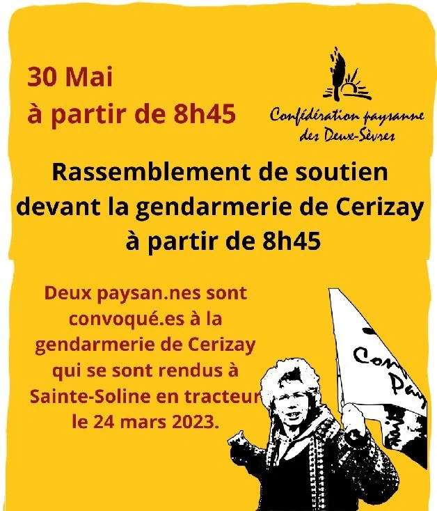

Appel archivé
À Cerizay, soutien aux agriculteurs convoqués à la gendarmerie
Date indiquée par Facebook · 29 mai 2025
Repères éditoriaux
Le 30 mai 2025, la Confédération paysanne des Deux-Sèvres avait donné rendez-vous à partir de 8 h 45 devant la gendarmerie de Cerizay, en soutien à deux paysans convoqués. Nous avons relayé son appel.
Texte conservé avec la publication
30 mai, rassemblement de soutien devant la gendarmerie de #cerizay

Sources
Archive rouge · export Facebook · AR-0002-FB-01111
À lire aussi · À Cerizay, le rassemblement de la Confédération paysanne en vidéo